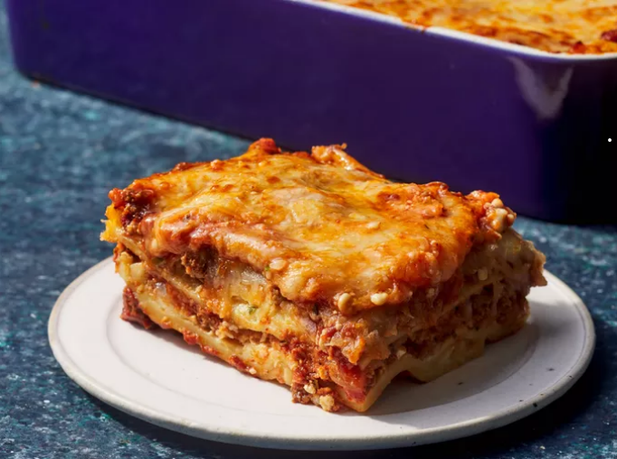

Home
Lasagna

Homemade Cheesy Beef Lasagna
This recipe makes a meaty, made-from-scratch tomato sauce and a delviously cheesy filing. A more traditional homemade lasgan filling would be made with ricotta, but my recipe calls for a blend of small-curd cottage cheese and Parmesan
Homemade lasagna isn't as hard to amke as it seems. Don't be intimidated by the many layers of delicious flavour.
Ingredients
- Ground Beef
- Onions
- Canned Tomatoes
- Fresh herbs
- Sugar
- Spices and seasonings
- Lasagna Noodles
- Cheese
- Eggs
Steps
-
Cook the meat: Cook the ground meat in a skillet until browned and crumbly. Add the onion and continue cooking until it's translucent. Stir in the canned tomato products, half of the parsley, garlic, basil, 1.5 teaspoons of salt, oregano, and sugar.
-
Cook the noodles: Boil the lasagna noodles in lightly salted water until they're al dente.
-
Make the cheese layer: Mix cottage cheese, Parmesan cheese, eggs, the remaining parsley, the remaining salt, and pepper in a bowl.
-
Assemble the lasagna: Layer the ingredients according to the recipe (starting with sauce and ending with mozzarella) until the lasagna is assembled.
-
Bake the lasagna: Cover with foil and bake in the preheated oven for about half an hour. Remove the foil and continue baking until the top is golden brown.